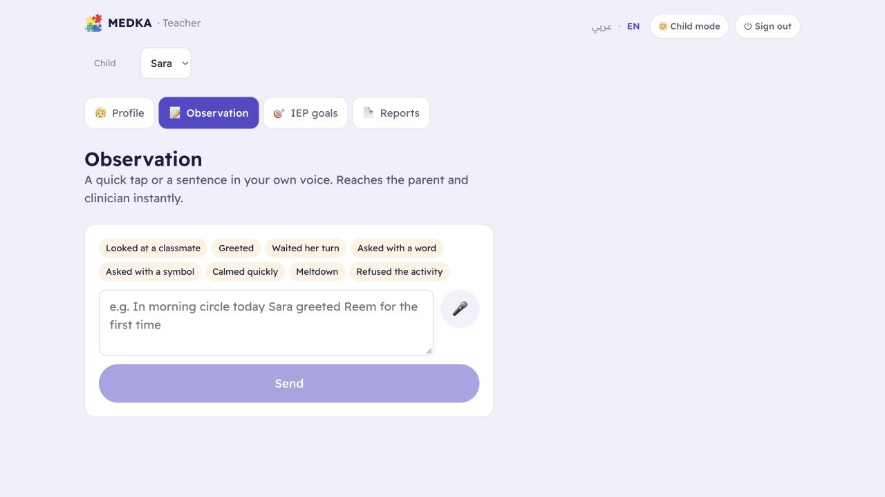
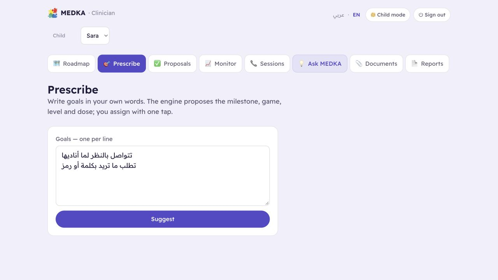

How the care team works together
Teachers and clinicians use their own views of the live app. Families can invite them to contribute observations and goals to the same roadmap.
Teacher tools
- Classroom profile
- See the child’s current goals, interests, and what may help them participate in class.
- Observation
- Use a quick choice or a short note to add what happened at school. The app describes sharing that entry with the parent and clinician.
- Individualised education programme (IEP)
- Link classroom goals to roadmap milestones. The teacher can propose a goal in Arabic and English for clinician review.
- School term report
- Medka drafts a report from entries in the app. The teacher can review it before sharing.


An observation can describe classroom participation, communication, or something that affected the child’s day.
Clinician tools
- Prescribe
- Describe a developmental goal in your own words. The app suggests a milestone, activity, level, and amount of practice for review.
- Proposals
- Check suggested changes and the evidence behind each one. The clinician decides what to approve.
- Monitor
- Review practice between appointments, look for stalls or changes, and review alerts. The live site describes a 28-day monitoring view.
- Reports and documents
- Review text summaries, notes, and bilingual reports to inform follow-up with the family and teacher.


The app shows how clinicians describe a goal before reviewing the suggested activity and level.
How a proposed change is reviewed
Add evidence
A caregiver, teacher, or play activity contributes an observation linked to a goal.
Review the proposal
Medka can suggest an activity or a milestone change and show the evidence behind it.
Approve the next step
The clinician reviews the suggestion. Approved activities can appear in the home plan.